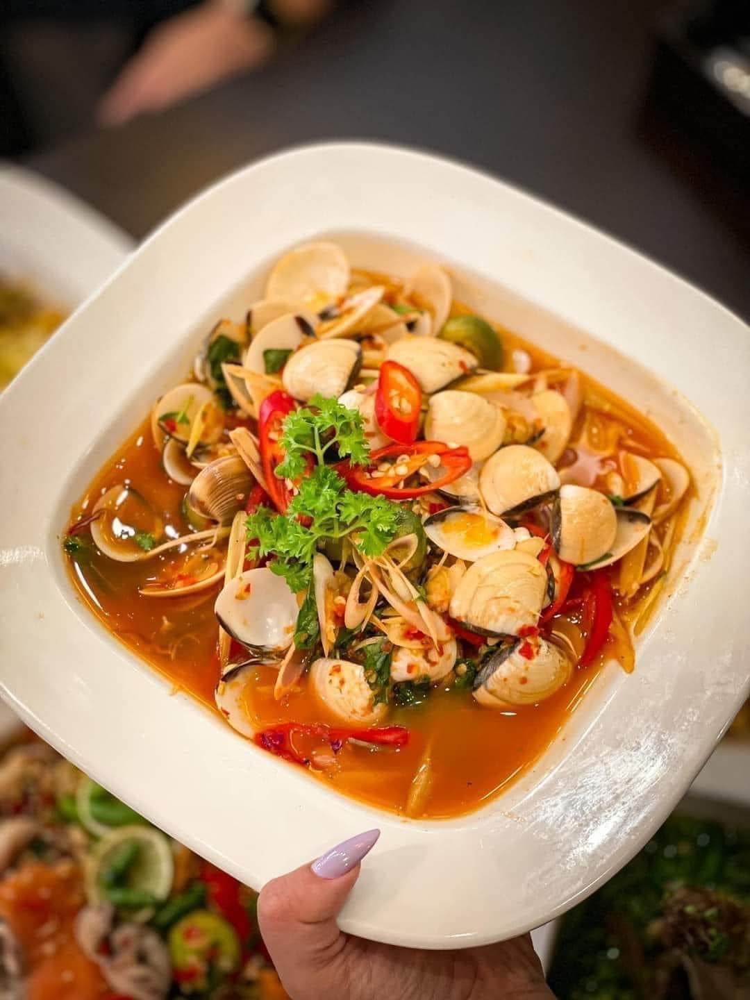
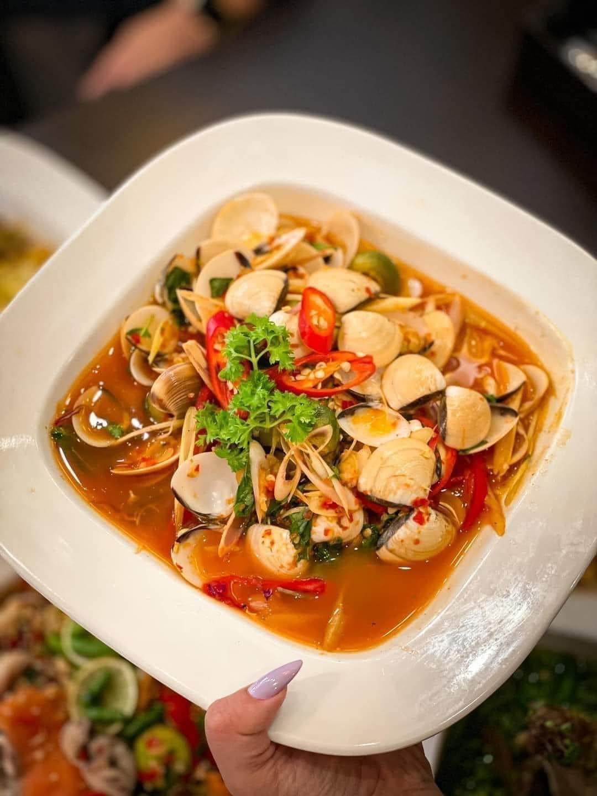

Việt Úc Flower Garden
Địa chỉ: 08 Huỳnh Thúc Kháng, thị trấn Măng Đen,
huyện Kon Plông, tỉnh Kon Tum, Việt Nam.
 


Địa điểm mới toanh tại Măng Đen
Trong không gian yên tĩnh của quán, thực khách có thể cùng nhau trò chuyện, thưởng thức những món ăn ngon miệng, và thư giãn trong những dịp nghỉ lễ.
Họ chia sẻ với nhau những câu chuyện mới lạ về cuộc sống tại vùng đất này. Ở đây, mọi người dường như quên đi những lo toan của cuộc sống bên ngoài, thay vào đó là cảm giác thanh bình, an yên.
Bước vào quán, bạn sẽ bị cuốn hút bởi không gian yên bình, thoáng đãng, tràn ngập hương thảo mộc và hơi ấm của đôi bàn tay người dân địa phương.
Việt Úc Flower Garden không chỉ là nơi thưởng thức ẩm thực, mà còn là điểm trở về với chính mình, giữa không gian yên tĩnh và hài hòa của Măng Đen.